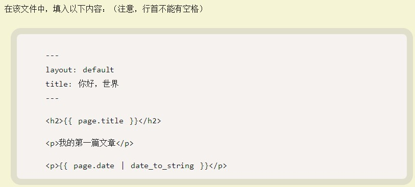

我一直觉得用一些静态页面搭建一个blog是一件轻而易举的事情，今天打算花10分钟在github上把个人blog搭起来，结果因为一点小问题，反反复复整了4个小时，现在把碰到的问题记录下来，以作备忘。
参考的是阮一峰大牛的教程，写的很细，按照一步一步来就行了http://www.ruanyifeng.com/blog/2012/08/blogging_with_jekyll.html。其中有个要注意的地方：  这里行首不能有空格,layout: default中间一定要有一个空格,要不然就会像我一样半天跑不起来。 在大牛的博客留言里面，有好几个也说报404错误，我估计很有可能是这个原因导致的，这个也算是大牛留的一个小坑吧，嘿嘿。 截图show下我的blog，很简陋，不过总算是整出来了，还是很有成就感的。